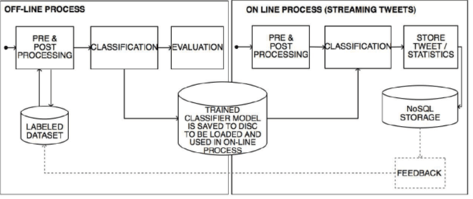

Data publicării: 26.01.2017
Autor articol: Adrian Iftene
Introducere
În articolul “A Review of Sentiment Analysis in Twitter Data Using Hadoop”, scris de Sheela Jaba, autoarea prezintă principalele articole ce tratează scalabilitatea sistemelor ce procesează datele de pe Twitter. Rețeaua Twitter a cunoscut o evoluție constantă de la an la an, în prezent (http://about.twitter.com/company), aceștia declarând ca au 313 milioane de utilizatori activi în fiecare lună, 1 bilion de vizitatori unici lunar, 82% utilizatori activi de pe dispozitive mobile, cu 3860 de angajați în întreaga lume.
Structura lucrării
Materialul din lucrarea (Jaba, 2016) este structurat pe 10 părți:
Introducerea vorbește de impactul pe care rețele sociale on-line l-au avut în ultimii ani. Bazele de date foarte mari ale acestora, conțin informații de unde se pot obține “pulsul utilizatorilor” din toată comunitatea. Twitter este folosită de cei ce dezvoltă aplicații deoarece: utilizatorii din rețea își exprimă opiniile despre anumite subiecte, volumul de date crește constant de la o zi la alta, utilizatorii sunt atât utilizatori normali, cât și celebrități, reprezentanți ai companiilor, politicieni și chiar președinți de țară. De asemenea, e important de remarcat faptul că audiența e formată din utilizatori din mai multe țări.
Capitolul 2 e dedicat definirii problemei, pe care autoarea o definește în contextul analizei de date de pe Twitter, pentru a identifica sentimentele utilizatorilor care postează tweet-uri. Problemele dificile sunt legate de faptul că informațiile vin cu o frecvență foarte mare, și din acest motiv apar dificultăți legate de procesarea și stocarea lor.
În următoarea secțiune, sunt trecute în revistă principalele abordări utilizate în analiza de sentimente folosind date de pe Twitter. Se trece de la tehnici bazate pe învățare automată, la tehnici de text și data mining. Soluțiile prezentate folosesc super calculatoare, sau sisteme distribuite bazate pe Hadoop, sau sunt integrate în Cloud-ul Amazon. În fiecare din aceste cazuri sunt analizate soluțiile din punct de vedere al performanțelor lor și a scalabilității.
Capitolele 4 și 5, prezintă mai în detaliu mediul folosit în dezvoltare și metodologia de dezvoltare. Ca și etape intermediare avem:
Colectarea datelor din social media;
Procesare în timp real cu un motor ce identifică sentimentele;
Salvarea datelor procesate într-o bază de date locală;
Extragerea sentimentelor pentru componenta de vizualizare;
Vizualizarea datelor în funcție de opțiunile utilizatorilor.
Secțiunea 6, introduce metricile folosite în evaluare: precizie, recall, F-measure, acuratețe (toate preluate din zona căutării documentare). Ultima secțiune dedicată concluziilor, face o trecere în revistă la ceea ce s-a făcut până în prezent și ce se poate face în viitor, iar bibliografia conține cele 24 de lucrări citate în lucrare.
Analiza datelor în timp real
Cea mai interesantă parte a articolului “A Review of Sentiment Analysis in Twitter Data Using Hadoop”, scris de Sheela în 2016, constă în prezentarea celor mai folosite metode ce permit realizarea analizei datelor de pe Twitter în timp real. Această secțiune este mai apoi urmată de o secțiunea unde se face o comparație a acestor metode.
În (Jimmy și Kolcz, 2012), autorii prezintă cum au integrat pe o mașină Hadoop uneltele de învățare automată, pentru a face clasificare supervizată, într-un context în care se gestionează cantități foarte mari de date. Algoritmul lor folosește date de intrare de ordinul 1 milion, 10 milioane, 100 de milioane de tweet-uri de dinainte de 1 Septembrie 2015, echilibrate din punct de vedere al exemplelor pozitive și negative. Rezultatele obținute de ei se încadrează între 77% și 82% acuratețe, în funcție de dimensiunea datelor de intrare.
În lucrarea (Jiang et al., 2012), se descrie o abordare de identificare a consumatorilor de droguri și a evenimentelor cu riscuri potențiale, pe baza analizei tweet-urilor. Tehnicile de procesare a limbajului natural sunt combinate cu folosirea clasificatorilor de tip SVM. Din cauza volumului imens de date (2 bilioane tweet-uri) experimentele s-au făcut folosind o platforma de tip HPC (High Performance Computing), folosind Map Reduce și tehnici de tip big data analytics. Procesările făcându-se în timp real se poate detecta în timp util și se poate interveni cu succes pentru a salva vieți umane. Componentele hardware au inclus componente EC2 (Amazon Elastic Compute Cloud), indexarea datelor făcându-se pe 15 instanțe EC2, cu 34.2 Gb de memorie, iar partea de calcule s-a făcut pe 13 EC2 în paralel. Astfel, s-a ajuns ca procesarea celor 2 bilioane de tweet-uri să se facă în doar 2 zile, pe un index Lucene de 896 Gb. Acuratețea procesărilor a fost în jur de 74%.
În (Bingwei et al., 2013), autorii fac mai multe experimente, pentru a putea observa cum se comportă clasificatorul Naive Bayes într-un context cu foarte multe date. Pentru asta ei folosesc un sistem bazat pe Hadoop și reușesc să demonstreze că el e scalabil. Ca date de intrare au folosit milioane de recenzii la filme, preluate din două surse Cornell University movie (dataset3) și Standford SNAP Amazon (dataset4), în ambele numărul recenziilor pozitive fiind de același ordin de mărime cu al recenziilor negative. Clusterul Hadoop a avut 7 noduri, fiecare fiind un server Dell, cu 12 procesoare Intel și 32 Gb de RAM. Acuratețea procesărilor a fost de 80.85%.
În (Cuesta et al., 2014), autorii propun o platformă, care colectează și analizează automat date preluate de pe Twitter. Platforma este extensibilă și permite adăugarea de noi module, care implementează tehnici noi și beneficiează de un modul, care face analiză de sentimente. Autorii fac două studii de caz pe spaniolă, unul pe baza datelor colectate în perioada atacului terorist din Boston, iar celălalt pe baza activității politicienilor și a jurnaliștilor din Spania.
(Michal și Romanowski, 2015) discută de posibilitatea de a face predicții într-o piață de produse, pe baza clasificării datelor preluate de pe Twitter. Datele au fost procesate în timp real, în perioada ianuarie-martie 2013, urmărindu-se informațiile legate de compania Apple. Clasificarea informațiilor s-a făcut cu o versiune Naive Bayes ce face map reduce, iar pe baza polarității extrase s-a făcut estimarea de preț viitoare pentru produse.
Mohit et al., 2014 propun o strategie de a folosi Apache Hadoop pentru a procesa datele extrase de pe Twitter. Folosind map-reduce, autorii clasifică fiecare cuvânt cu o anumită probabilitate, urmând ca pe baza acestor valori să calculeze o probabilitate globală pentru tot tweet-ul.

În Figura 1, putem vedea arhitectura generală a unui sistem ce procesează în timp real tweet-uri. Putem observa că preprocesarea unor date de antrenament e foarte importantă, pe baza acestei operații făcându-se clasificările ulterioare.
Concluzii
Rețelele sociale pot oferi la un moment dat foarte multe informații, mai ales în momentele când sunt fenomene naturale deosebite (cutremure, inundații, incendii, înzăpeziri, friguri sau călduri extreme), sau când sunt alegeri prezidențiale, sau când sunt atentate cu multe victime, care stârnesc panică. În astfel de situații, volumul datelor care apar în aceste rețele poate crește exponențial, fiind nevoie să se aplice tehnici avansate care să asigure scalabilitatea și obținerea de rezultate în timp real. Am văzut din lucrările prezentate, cum autorii au apelat la super calculatoare (cu multe procesoare, cu mult RAM, cu procesoare foarte bune), sau la arhitecturi de tip cloud, sau la tehnici ce folosesc map-reduce (pentru a reduce repede dimensiunea mare a datelor) într-un context Hadoop. Totul pentru a obține informații utile cât mai repede și pentru a permite luarea unor decizii rapide, care pot salva vieți.
Referințe bibliografice
- Bingwei, L., Blasch, E., Chen, Y., Shen, D., Chen, G. (2013) Scalable Sentiment Classification for Big Data Analysis Using Naive Bayes Classifier. In Big Data, 2013 IEEE International Conference on, pp. 99-104.
- Cuesta, Á., David, F., Moreno, M. (2014) A Framework for Massive Twitter Data Extraction and Analysis. In Malaysian Journal of Computer Science, pp. 50-67.
- Jiang, B., Topaloglu, U., Yu, F. (2012) Towards large-scale twitter mining for drug-related adverse events. In Proceedings of the 2012 international workshop on Smart health and wellbeing, ACM, pp. 25-32.
- Jimmy, L., Kolcz, A. (2012) Large-Scale Machine Learning at Twitter. In Proceedings of the 2012 ACM SIGMOD International Conference on Management of Data, pp. 793-804.
- Karanasou, M., Ampla, A., Doulkeridis, C., Halkidi, M. (2016) Scalable and Real-time Sentiment Analysis of Twitter Data. http://sentic.net/sentire2016karanasou.pdf
- Michal, S., Romanowski, A. (2015) Sentiment analysis of Twitter data within big data distributed environment for stock prediction. In Computer Science and Information Systems (FedCSIS), 2015 Federated Conference on, IEEE, pp. 1349-1354.
- Mohit, T., Gohokar, I., Sable, J., Paratwar, D., Wajgi, R. (2014) Multi-Class Tweet Categorization Using Map Reduce Paradigm. In International Journal of Computer Trends and Technology, pp. 78-81.